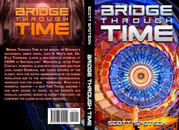
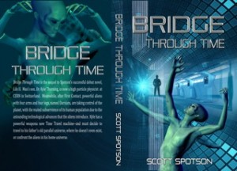

From the journal
17-Year-Old Reviews "Bridge Through Time"
From the original website · 2015-06-19
http://www.litpick.com/review/bridge-through-time-review-sweetfable
Kyle Thorning, a physicist at CERN, always felt like he never belonged in the place he grew up in. It turns out that he may have been right. Bridge Through Time follows Kyle, now a man living in the 2020’s, as he finds out more about his life and the world around him through scientific discoveries....
To read more, click on the link above. Five stars! From a student review website.
Kyle Thorning, a physicist at CERN, always felt like he never belonged in the place he grew up in. It turns out that he may have been right. Bridge Through Time follows Kyle, now a man living in the 2020’s, as he finds out more about his life and the world around him through scientific discoveries....
To read more, click on the link above. Five stars! From a student review website.



